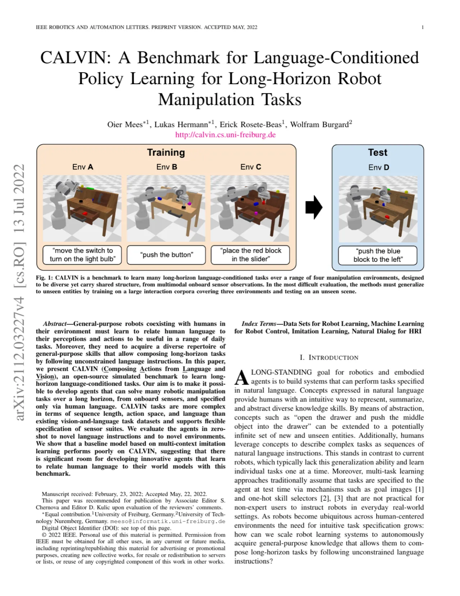
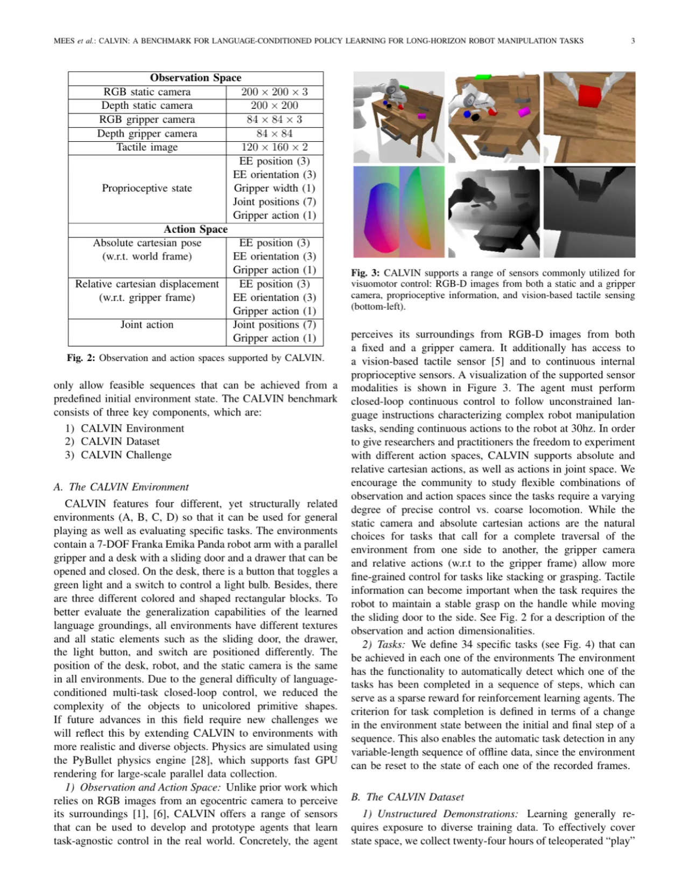
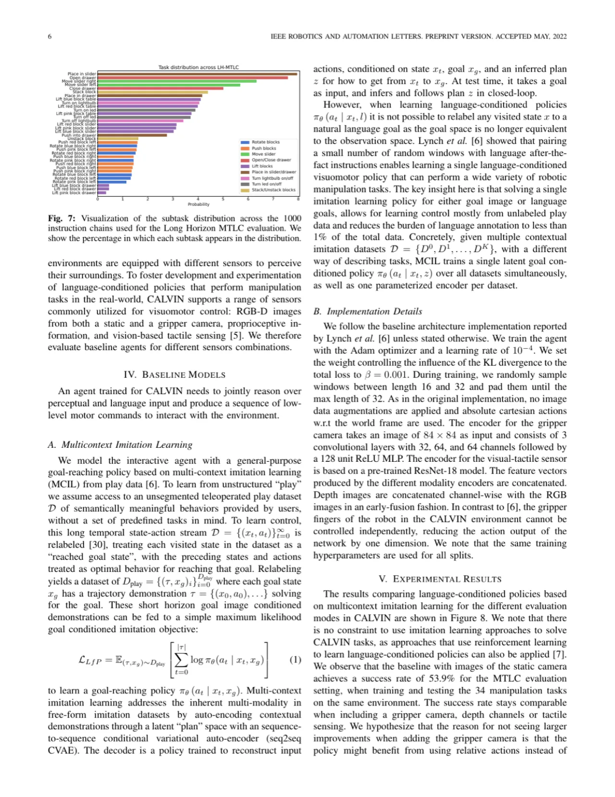
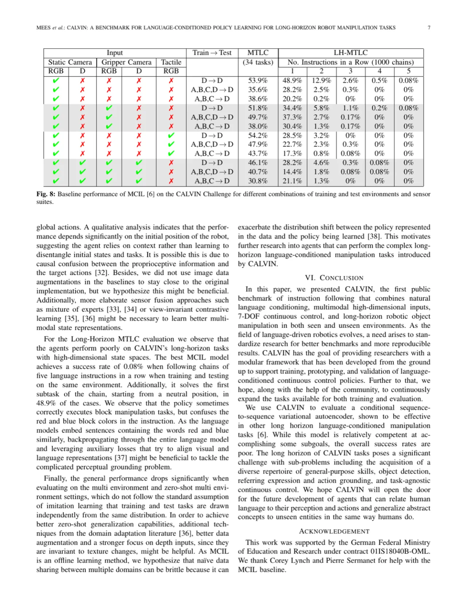

CALVIN（Composing Actions from Language and Vision）是一个开源仿真基准，要求智能体仅凭板载传感器和无约束自然语言指令， 在不同环境中完成长序列机器人操控任务。基准在序列长度、动作空间与语言多样性上均超越现有数据集， 评估结果表明即便是最强基线方法也在此面临重大挑战，为创新型语言-视觉-动作研究提供了广阔空间。
现有视觉-语言任务数据集在序列长度、动作空间复杂度和语言多样性方面均存在明显不足， 难以训练出能够在日常真实环境中与人类协作的通用机器人。如何让机器人在仅凭语言指令的条件下， 自主完成由多个子技能组合而成的长序列操控任务，是迈向通用机器人的关键挑战。
"General-purpose robots coexisting with humans in their environment must learn to relate human language to their perceptions and actions to be useful in a range of daily tasks. Moreover, they need to acquire a diverse repertoire of general-purpose skills that allow composing long-horizon tasks by following unconstrained language instructions."

CALVIN 不仅是数据集，更是一个完整的研究框架，包含仿真环境、数据采集流程、语言标注协议和评估协议。 论文同时提出一个 multi-context imitation learning（MCIL）基线模型作为出发点，供后续研究超越。
基于 PyBullet 物理引擎构建，包含一个带滑动门、按钮、LED 灯、滑块和彩色积木的桌面工作区， 由 7-DOF Franka Emika Panda 机械臂操控。环境设计在外观（纹理、颜色）和物体布局上均有变体， 支持在 4 个训练环境（Env A、B、C）和 1 个测试环境（Env D）之间的零样本泛化评估。 动作空间为笛卡尔末端执行器位移（绝对位置 3 维 + 方向 3 维 + 夹爪 1 维），控制频率 30 Hz。

操控员（operator）在三个关键环境中远程控制机械臂完成示教（play data）， 采集约 2.4 万步遥操作数据。在此基础上，自动分割出对应 34 种技能的短序列片段， 并由标注员为每个片段撰写自由形式的自然语言指令（平均每任务约 12 条同义表达）。 最终 CALVIN 数据集包含跨四个环境的多样化演示，语言指令词汇量超过 30,522， 平均句长 7.98 词，句子数量 7 词以下占多数，呈现真实人类自然语言的多样性。
评估时，智能体需在无示教的情况下，依据语言指令链连续完成 1,000 条指令序列， 最多连续完成 5 个子任务（Multi-Task Long-Chain，MTLC）。 成功率以"在 1,000 条指令链中，每条平均连续完成多少步"衡量（No. Instructions in a Row）。 论文设置了三类评估难度：
作者基于 Lynch et al. 的 multi-context imitation learning 框架实现基线： 使用 sequence-to-sequence 变分自编码器（VAE）学习语言条件下的目标图像表征， 再训练一个 goal-conditioned 策略以闭环执行任务。 模型输入为视觉观察和语言指令，输出为连续动作； 训练数据来自跨所有环境的遥操作示教，编码器和解码器独立训练后联合微调。 评估时语言指令直接送入语言编码器（BERT/随机窗口语言），推理阶段无需示例图像。
论文在 CALVIN Challenge 的三种难度设置下评估 MCIL 基线， 并分析不同传感器组合对性能的影响，揭示当前方法面临的核心挑战。

下表为 MCIL 基线在 CALVIN 各评估设置下的成功率（成功完成的 "No. Instructions in a Row"，满分 1000）。 数字越高代表在连续指令链中完成的步数越多。

| 评估设置 | 传感器 | 成功率（MTLC，34 tasks） | 说明 |
|---|---|---|---|
| D→D（单环境） | Static RGB | 35.6% | 单环境内训练测试 |
| ABCD→D（零样本） | Static RGB | 49.7% | 多环境训练 → 新环境测试 |
| ABCD→D（零样本） | RGB + Gripper | 37.3% | 增加夹爪视角 |
| LH-MTLC（长序列链） | Static RGB | ≈2.6% | 1,000 链中完成 5 步的比例极低 |
实验系统比较了 Static Camera（200×200 RGB）、Gripper Camera（84×84 RGB）、Depth、Tactile 四类传感器在不同组合下的策略性能。结果显示：
CALVIN 完全基于 PyBullet 仿真，尚未在真实机器人平台上验证。 仿真与现实之间的 sim-to-real gap 可能使基准上的结论难以直接迁移至实体机器人。 作者未在论文中提供真实场景验证（作者明确指出）。
论文发布时仅提供 MCIL 一种基线，且该基线在长序列任务上表现极差， 难以作为有力参照。更多竞争性方法的加入依赖社区后续跟进（作者明确指出需要社区投入）。
34 种任务均聚焦于单一桌面工作区内的精细操控（推拉积木、开关灯、滑动门等）， 场景多样性和任务复杂度（如多物体交互、工具使用）仍有限（从设计推断）。
尽管通过众包收集了 400 余条自然语言标注，但标注者群体和指令风格可能存在统计偏差， 未覆盖真实人机交互中的所有表达方式（从方法推断）。
当前主要以"连续完成子指令数"（No. Instructions in a Row）作为唯一核心指标， 未涵盖效率、安全性、自然性等多维度评估（从实验设计推断）。